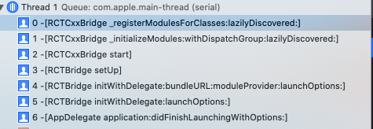
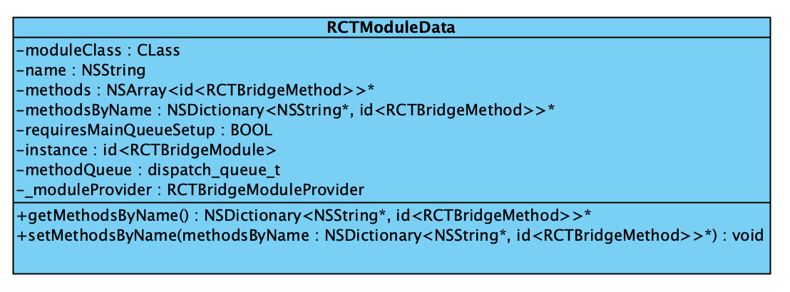
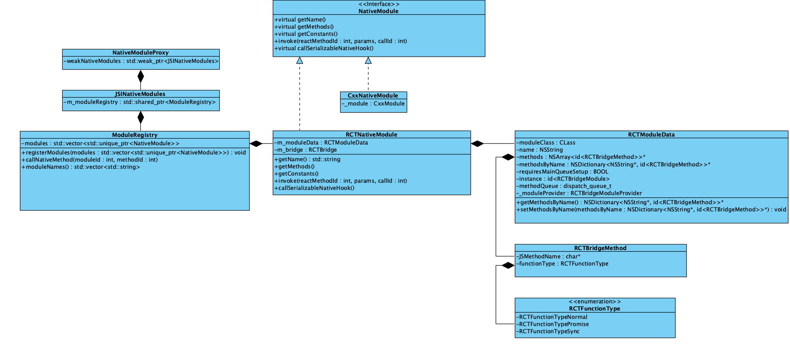
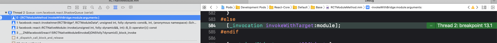
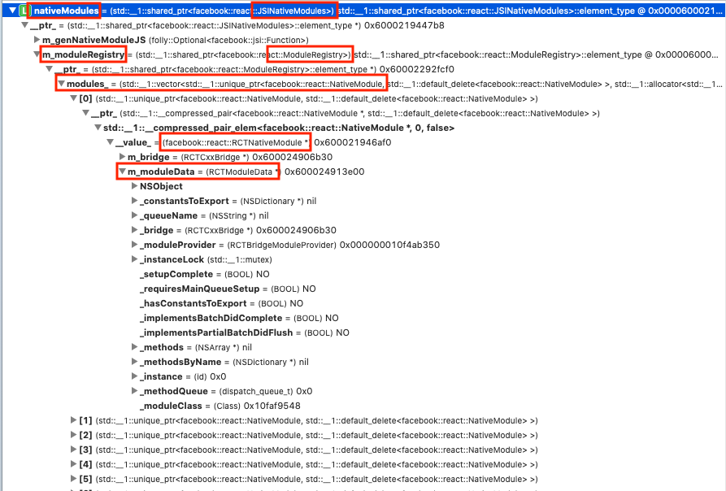
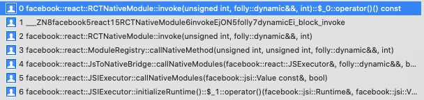
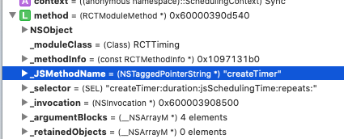
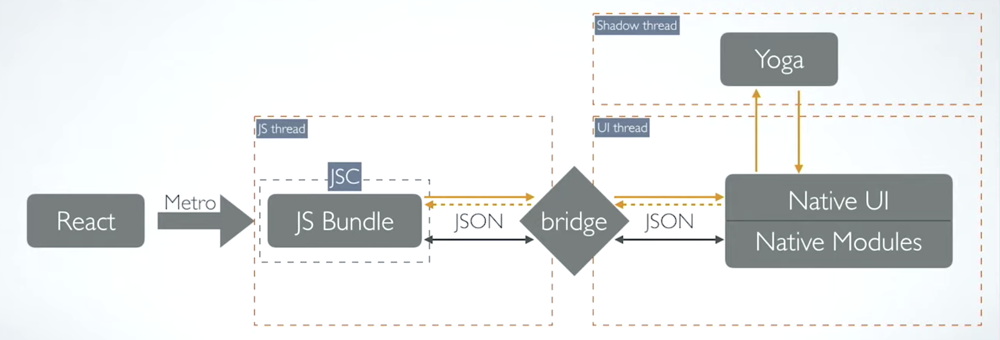

Dive into react native module
Native Modules is one of the key part of React Native which enables JavasScript to call methods in iOS or Android native implementation.
It is quite interesting to explore the source code about native modules in react native repo. In this article, I would like to talk something about how React Native register, initialize native modules and what is behind the method calling from JavaScript side to iOS Objective-C modules.
First of all, let’s take look at RCTBridgeModule` , which is a protocol provides interface needed to register a bridge module.
1 | #define RCT_EXPORT_MODULE(js_name) |
Export and Register Modules
RCT_EXPORT_MODULE is in RCTBridgeModule protocol, You can use this macro to export your iOS module.
Place this macro in your class implementation to automatically register your module with the bridge when it loads. The optional js_name argument. It will be used as the JS module name. If omitted, the JS module name will match the Objective-C class name.
For example, RCT_EXPORT_MODULE is used in RNCAsyncStorage.m#L404, react-native-async-storage.
This macro will be replaced by the following code in the preprocessor phase when you are compiling a source file.
1 | RCT_EXTERN void RCTRegisterModule(Class); |
In Objc world, load method is invoked whenever a class is added to the Objective-C runtime at the very beginning of app launch. At this time, it invokes RCTRegisterModule function to add the class object into the RCTModuleClasses array. RCTModuleClasses is an array containing a list of registered classes.
1 | void RCTRegisterModule(Class moduleClass) |
When adding current module class into RCTModuleClasses array, it uses dispatch_barrier_async to dispatch this task to a concurrent queue, RCTModuleClassesSyncQueue. Using dispatch_barrier_async makes sure that
one async block executing at a time in RCTModuleClassesSyncQueue.
As we mentioned just now, RCTModuleClasses is a global array containing a list of registered classes.
1 | Printing description of RCTModuleClasses: |
Register and Initialize Modules
Modules in
RCTModuleClassesare registered and initialized in start phase inRCTCxxBridge.mm. In initializeModules:withDispatchGroup:lazilyDiscovered, react native firstly registers all theseautomatically-exportedmodules.code here; then store them into array_moduleClassesByID, a bunch of pointers toClassobjects, and_moduleDataByIDreferring to a bunch ofRCTModuleDataobject. code here. The back trace for module registering is as follow:
If the module needs to be set up in
mainthread. It will be guaranteed running in Main thread. code here and here. It makes sense that react native doc suggests us returnNOin therequiresMainQueueSetupmethod.
If your module does not require access to UIKit, then you should respond to
+ requiresMainQueueSetupwithNO.
- When the
RNBridgeis initialized. It inits theRCTCxxBridgeandstartsit as current bridge.RNBridgein Objc realm basically is a wrapper ofRCTCxxBridge.mm. At that time, RN registers extra modules.
Just as what Lorenzo S. shared in this talk . The initialization of all modules in RCTCxxBridge start phase slows down its launch time. The more native module you have, the longer time it takes to initialize these modules even you won’t use them on the first page.
Store modules
In the registration phase, in [RCTCXXBridge _registerModulesForClasses:lazilyDiscovered:] , react native stores a list of registered classes into a dictionary _moduleDataByName. The key is the moduleName, the value is the RCTModuleData.
1 | NSMutableDictionary<NSString *, RCTModuleData *> *_moduleDataByName; |
Remember, in registering phase, The classes of modules are stored in_moduleClassesByID. While,_moduleDataByIDstoresRCTModuleData`.
1 | // Native modules |
RCTModuleData
Now, you may wondering what is RCTModuleData? While, it is just the data structure to hold data for react native module.

RCTBridgeModuleProvider in RCTModuleData is for initializing an instance of RCTBridgeModule. Then, RCTModuleData retain this instance. In initialization phase, RCTModuleData creates an instance for the module class by RCTBridgeModuleProvider . What RCTBridgeModuleProvider does is to provide an instance using[moduleClass new]. Code ref.
1 | - (instancetype)initWithModuleClass:(Class)moduleClass |
Get Module by name or class
RCTBridge bridge is a simple wrapper for the RCTCxxBridge , to make the methods in RCTCxxBridge.mm available for other Objective-C objects. You can access to these two methods to get the module from Objective-C objects.
1 | // RCTBridge |
They will look up the _moduleDataByName dictionary to find out the target RCTModuleData and get its instance. Source code here
Module-related Class
You might be interested in the relationship between these classes.

RCTNativeModule and ModuleRegistry
In RCTNativeModule.mm, RCTNativeModule, this c++ class inherits from the base class, NativeModule, which holds the info for modules.
The constructor method in RCTNativeModule takes in two parameters, RCTBridge object and RCTModuleData object.
Invoke method in RCTNativeModule
The invoke method in RCTNativeModule
firstly get the
methodNamebymethodIdget the execution queue for current module
construct a block, which calls
invokeInner.invokeInnercallsinvokeWithBridge:module:arguments:in theRCTModuleMethod.mm.1
invokeInner(weakBridge, weakModuleData, methodId, std::move(params), callId, isSyncModule ? Sync : Async);

if current module is executed in
JSThread, then block for invoking the method is executed synchronously. But if methods in current module should be executed in other threads, react native will dispatch the previous block into the related queue.1
2
3
4
5
6
7
8
9dispatch_queue_t queue = m_moduleData.methodQueue;
const bool isSyncModule = queue == RCTJSThread;
if (isSyncModule) {
block();
BridgeNativeModulePerfLogger::syncMethodCallReturnConversionEnd(moduleName, methodName);
} else if (queue) {
BridgeNativeModulePerfLogger::asyncMethodCallDispatch(moduleName, methodName);
dispatch_async(queue, block);
}
NativeModuleProxy
In the Runtime initialization phase,
RCTxxBridge.start->Instance.initializeBridge->NativeToJSBridge.initializeRuntime->JSIExecutor.initializeRuntime,an
NativeModuleProxyobject is created and set asnativeModuleProxyproperty to theglobalobject in JavaScript runtime context.
1 | void JSIExecutor::initializeRuntime() { |
- In
NativeModule.js, JavaScript side can get a bunch ofnative modulesfrom thisnativeModuleProxyproperty fromglobalobject.
1 | let NativeModules: {[moduleName: string]: $FlowFixMe, ...} = {}; |
- In the iOS side, the
NativeModuleProxyclass holds a weak pointer forJSINativeModules, which actually holds a list of registered native modules.
1 | std::weak_ptr<JSINativeModules> weakNativeModules_; |

Export Method
The RCT_EXPORT_METHOD macro is used to export method in Objective realm, and will be replaced by the following code
1 | #define RCT_REMAP_METHOD(js_name, method) \ |
Basically, what it does is to construct a RCTMethodInfo structure.
1 | typedef struct RCTMethodInfo { |
The calculateMethods extracts exported methods and get the IMP of these methods. IMP actually is a c function which takes in class and selector as its parameters. And then, RCTMethodInfo and moduleClass are used to construct RCTModuleMethod, which confirms to RCTBridgeMethod.
RCTBridgeMethod
The RCTModuleData also contains information about exported methods.
1 | /** |
The getter methods for these two will generate a list of RCTBridgeMethod objects. RCTBridgeMethod is a protocol. Any class confirms to this protocol has to implement JSMethodName, functionType and invokeWithBridge: module:arguments: function.
1 | @protocol RCTBridgeMethod <NSObject> |
So when react native triggers these two getter method? Well, in the RCTUIManager
1 | RCT_EXPORT_METHOD(dispatchViewManagerCommand |
Beside, RCTModuleData also sets up and holds the thread methodQueue for the native module. This dispatch_queue_t object is also retained in RCTBridgeModule.h, which is used to call all exported methods.
1 | - (void)setUpMethodQueue |
How does JS invoke a method in Native?
I set a breakpoint at [RCTModuleMethod invokeWithBridge:module:arguments:].

- in initialization phase,
nativeFlushQueueImmediateproperty is set in the global object of the JavaScript execution context.. code reference here.global.nativeFlushQueueImmediate(queue)is called inenqueueNativeCallfrom the Javascript side. code ref. Before calling, it makes sure the last Flush is 5 milliseconds ago; thennativeFlushQueueImmediateis triggered.
1 | if ( |
callfunction in JSCRuntime is invoked when there is a method call from JavaScrip side, then thehost functionis triggered. In this case, the host function isnativeFlushQueueImmediatein the C++ realm.
1 | JSValueRef call( |
- See the following C++ lambda is used to create the host function
nativeFlushQueueImmediate. In side this C++ lambda, we can see it calls callNativeModules.
1 | runtime_->global().setProperty( |
Then callNativeModules in JSToNativeBridge is invoked.
- The callNativeModules in
JSToNativeBridgefirstly parses theJSONdata to get themoduleIds,methodIdsandparams, etc. source code here. After constructingMethodCallstructure, which holdsmoduleId,methodId,arguments,callId,callNativeModulesinModuleRegistry.cppis called.
1 | // This is always populated |
moduleId is used to look up the NativeModule object in a list of modules. NativeModule list is set up in CxxBridge initialization phases, which basically is a vector holding module information in C++ realm, transformed from _moduleDataByID array in Objc realm. As we know _moduleDataByID is a list of RCTModuleData holding registered RCTBridgeModule and its instance.
It goes to
invokein theRCTNativeModule.mm, which has module info in its private variableRCTModuleDataobject.The
invokefunction in theRCTNativeModule.mmcallsinvokeInner. InsideinvokeInner, it get theRCTBridgeMethodobject fromRCTModuleDataobject usingmethodId. code
1 | id<RCTBridgeMethod> method = moduleData.methods[methodId] |
Then, it calls invokeWithBridge:module:arguments: in the RCTModuleMethod.mm.
1 | id result = [method invokeWithBridge:bridge module:moduleData.instance arguments:objcParams]; |

- The
invokeWithBridge:module:arguments:uses NSInvocation to send message to the relatedmoduleobject.
An
NSInvocationobject contains all the elements of an Objective-C message: a target, a selector, arguments, and the return value.
7.1. parse MethodSignature to init NSInvocation.
1 | _selector = NSSelectorFromString(RCTParseMethodSignature(_methodInfo->objcName, &arguments)); |
7.2, trigger the method in the module
1 | [_invocation invokeWithTarget:module]; |
In a nutshell, when JavaScript side calls a method in a specific native module, the indices of the module and method are passed to Objc through JSCRuntime. These information is serialized as JSON object. By looking up the table which holds the information about registered modules and methods, React Native can invoke the specific method in a specific module in the Objective-C realm. There are some restrictions in this workflow.

- Native Modules are specified in a package and are eagerly initialized. The startup time of React Native increases with the number of Native Modules, even if some of those Native Modules are never used.
- There is no simple way to check if the Native Modules that JavaScript calls are actually included in the native app. With over the air updates, there is no easy way to check if a newer version of JavaScript calls the right method with the correct set of arguments in Native Module.
- Native Modules are always singleton and their lifecycle is typically tied to the lifetime of the bridge. This issue is compounded in brownfield apps where the React Native bridge may start and shut down multiple times.
- During the startup process, Native Modules are typically specified in multiple packages. We then iterate over the list multiple times before we finally give the bridge a list of Native Modules. This does not need to happen at runtime.
- The actual methods and constants of a Native Module are computed during runtime using reflection.
Author : RY Zheng
Link : https://suelan.github.io/2020/12/23/20201223-what-is-behind-react-native-module/
License : MIT